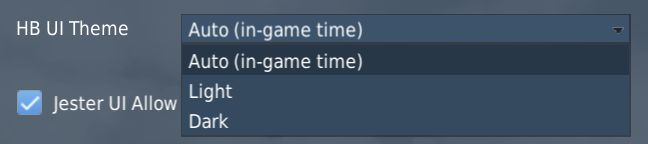

Special Options
The Phantom offers several options that can be set within the Special Option menu in DCS.

Radio Menu and PTT Behavior

Dropdown to select the behavior of the push to talk bind for the radio.
| Option | Close Menu | Menu must be open | Export Voice |
|---|---|---|---|
| Default | ❌ | ❌ | ✅ |
| Open Menu | ❌ | ✅ | ✅ |
| Hide on Release | ✅ | ❌ | ✅ |
| No Export | ❌ | ❌ | ❌ |
The columns have the following effects:
- Close Menu - when releasing the key, the DCS communication menu is automatically closed
- Menu must be open - the key only works when the DCS communication menu is currently open
- Export Voice - when pressed down, voice is exported to tools like SRS
Stick Deflection Limit
Limits the maximum force in lbf (Pound-Force), i.e. strength, the pilot is able to pull the stick with.
This effect is mostly seen when controlling the aircraft during high G maneuvers and can prevent accidentally pulling extreme Gs.
💡 As an example, in certain situations it would require beyond human strength to pull the stick all the way back. With this set, when pulling the real joystick beyond that limit, the in-game flight stick is limited and not pulled equally aft. This also prevents for example accidentally pulling 20 G and instantly blacking out, just because the real joystick has no, or reduced, force feedback.
Stick Force Blending
When maximum movement of the stick would result in excessive forces being generated, having this activated will scale down the generated force to improve handling precision, but also can help to prevent accidentally pulling extreme Gs.
Stick neutral position smoothing period
Smooths forces applied by the aircraft systems that move the sticks neutral position (see Bobweights vs. Bellows). The higher the selected time period, the less impact do these systems have on the sticks movements.
This makes it easier for users of non-force-feedback hardware to react to sudden changes of the sticks neutral position and generally achieve more stable flight.
AFCS Breakout Deadzone
Percentage of stick input (separate for roll and pitch) after which the AFCS system will recognize the pilot stick was moved from neutral trim position (force transducer switches closed).
This will affect the AFCS roll and pitch channel operation and prevent it from fighting your input. That is, when moving the stick beyond this deadzone, the AFCS understands that the pilot wants to take control and the AFCS will stop trying to correct the movement. The roll breakout will temporarily disable the roll stab aug as well as bank angle hold and heading hold. The pitch breakout will temporarily disable the pitch attitude hold as well altitude hold.
💡 This deadzone is "on top" of the DCS axis deadzone so the higher basic deadzone set on the axis, the smaller the AFCS breakout deadzone should be set. Keep in mind that setting low values, such as 0%, while having an already low basic deadzone can result in some of the autopilot functions not engaging even when letting go the stick because the stick may still be not perfectly neutral.
Default values are 1% for roll and 2% for pitch.
💡 To check whether the breakout is currently activated you can use the controls indicator and look for the text below it.
For more info see Force Transducer.
Afterburner Detent
Two options to define at which point of the physical hardware throttle input (0 to 100%) the aircraft will light the afterburner.
That is, if set to 80%, the MIL power range of the aircraft will be commanded between 0% and 80% of your physical throttle, while the remaining 20% will control the afterburner range.
The deadzone option can be used to split the points in the range at which the afterburner will be turned on and off. For example, setting 20‰ for the deadzone and 80% for the detent results in afterburner activation at 82% and deactivation at 78% of throttle input.
Disable Multicrew Controls Input When Joining as WSO
If checked, when joining as WSO in multiplayer with a human pilot, your local controls inputs (stick, rudder pedals and throttle) will be ignored by default. You can toggle your local input back with assigned keybind.
Jester Landing Callouts
If enabled, Jester will assist the pilot during landing by calling out aircraft altitude, similar as seen in civilian aviation.
💡 Real Phantom WSOs did not assist during landing.
Persistent Aircraft (by livery and tail number)
When checked, enables the aircraft persistence system. Allowing to save and load aircraft state across flights.
The bind Initialize Persistent Aircraft State (LCTRL+P) is used initially to start tracking the current aircraft. Any subsequent mission flown with the same combination of livery and tail-number results in this particular aircraft being loaded again.
See 9.6. Persistence for details.
💡 Mission authors can overrule this setting, see 9.12. Mission Editor.
HB UI
Resolution Override
User interface elements, such as the Jester Wheel, the manual, virtual browser and others are scaled and positioned via a fixed resolution that must match the resolution of the in-game surface they are rendered on.
With the option unchecked, this resolution is automatically determined based on screen settings. However, in certain situations, especially when using VR or having a multi-monitor setup, this automatic detection might fail and compute an incorrect resolution.
Should UI elements be misplaced, for example the Jester Wheel not being centered or even cut off, check this setting and edit the resolution manually until the UI is displayed properly.
Offset
Allows to displace the UI horizontally and vertically. Positive values shift it to the right or down, negative values to the left or up.
Normally, this should be kept at the default value of 0 px. However, in certain cases (e.g. when using VR and setting it to render on the LEFT or RIGHT eye, while having the checkbox for "Use DCS System Resolution" not checked) it is possible that the UI gets cut off. This setting then allows to move the UI back into view, but therefore giving up proper alignment on the UI, such as the Jester UI being centered on the screen.
Domain Access

Defines which domains the HB UI is allowed to access.
Full allows for free browsing, allowing to visit any website with the Virtual Browser.
The default option Whitelist defines which sites can be accessed by using a whitelist file. Only domains passing the rules setup in the file are allowed. The default rules are setup to support all HB UI features and a hand full of useful websites for the Virtual Browser, such as YouTube.
This file is automatically created at
C:\Users\John Doe\Saved Games\DCS_F4E\hbui_whitelist.txt
when launching the Phantom for the first time.
💡 Deleting the file will lead to it being recreated on the next launch. That way, one can have it updated to the newest set of rules - should there have been any changes.
Selecting Offline will disable the Virtual Browser and any other HB UI features and elements that require an active online connection.
Language
Dropdown to select the language used for all HB UI elements. Available are:
- English
- Chinese (中文)
- German (Deutsch)
Affects for example the Jester UI, the Bombing Tool, but also the in-game version of this Manual and more.
💡 If you are interested in making translations for other languages, please head over to the Modding Section, thanks! 👍
Theme

Allows to select which color theme is used by the UI. All UI elements support a light and a dark theme.
The default option AUTO will pick the theme dynamically based on the in-game time. Light during the day and Dark for a night mission.
Jester UI
Animation Speed
The value is applied as factor to certain animations in the Jester UI, such as the closing and opening of the wheel or the blinking when selecting an item.
The default speed is given by 1.0. Values above that speed up the animations,
values below 1.0 slow it down. The allowed range is 0.01 to 1000.
💡 Using a value such as
1000effectively disables the animations. While negatively impacting the visual experience, this can help if the UI does not feel responsive enough.
Allow Mouse Controls
When checked, the Jester UI allows interaction with the mouse moving it over items and left clicking.
The option can be disabled if for example only head-tracking is preferred and the automatic mouse detection is perhaps triggering too often, e.g. when having placed the mouse on the arm of the chair.
Allow Head-Tracking

When checked, the Jester UI allows moving the cursor simply by moving the in-game character head. Can be disabled if no convenient head-tracking equipment, such as TrackIR or VR, is available.
💡 Tracking options are chosen dynamically based on movement. Even if head-tracking is enabled, other options such as using the mouse or assigning the cursor to an axis are also still available.
The dropdown allows selection of the head-tracking behavior:
- Center - the view-origin is at the aircraft center
- Dynamic - the view-origin is where the UI was opened
Selecting Center requires looking forward when operating the UI, whereas Dynamic allows using head-tracking from any view position. However, Dynamic can lead to having to chase the cursor when closing and re-opening the UI frequently. Also, the Dynamic option is less meaningful in VR, as the UI elements are then all rendered on the front always.
💡 Jester Dialogs always use the Center type, requiring to look forward.
Max Angle
Defines the angle (in degrees) the head has to be moved off-center to reach the corners of the UI.
In other words, reducing this value from its default of 10° makes head-tracking more sensitive to head movement, while increasing it will reduce the sensitivity.
💡 VR users might find a lower angle more comfortable, since the head-to-game translation is normally 1:1 in VR.
Deadzone
Defines the angle (in degrees) the head has to be moved off-center to for the UI to recognize head-movement and engage head-tracking.
If the head is moved less than the deadzone (0.5° by default), the cursor is automatically set to the center instead and not moved.
💡 Users playing with a high and very sensitive head-to-game translation might find it useful to increase this value slightly.
Origin Angle Y-Offset
Defines the offset (in degrees) to displace the center point of head-tracking vertically. Positive values shift it up, negative values down. The default setting is 0°.
This setting can be useful if the center point should not be properly lined up with the natural forward view. That is, when opening the menu from a natural head position and the cursor already shows a displacement instead of being centered, tweaking this setting mitigates the issue.
Radar Stick for Cursor
When checked, the binds mapped to control the Antenna Hand Control can also be used to move the cursor used for Offset Bombing and similar, making binding the two Track Wheels obsolete.
Force Feedback
Gain
For users with force-feedback sticks, this setting can be used to adjust the gain of the forces per axis.
The default setting is 100% for Roll and Pitch axis. Greater values will increase the force used by the stick, while smaller values will decrease it.
Force OFF
When checked, the stick behavior will be that of a non-FFB stick. That is, even if there is a FFB stick connected or the "Use FFB" checkbox in the general DCS settings is checked.
Lower Simulation Update Rate
This experimental option allows reducing the update rate of the majority of the planes components.
Doing so may reduce the stress on the CPU, improving game performance for machines that are bottlenecked by their CPU.
However, it can also result in not only visual cuts, such as animations running slower, but will also cause some systems to degrade. For example the Pave Spike, running slower, can not update its ground stabilization algorithm fast enough anymore. So ticking this option can cause issues and lead to bugs.
Lower HB UI Refresh Rate
When checked, all HB UI elements are rendered at a significantly lower rate.
This can help improving performance while HB UI elements are shown by reducing CPU load. However, it can also cause UI animations to not look smooth anymore.